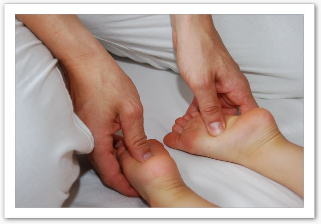

Cranio Sacrale
Sanfte Impulse für ein tiefes inneres Gleichgewicht.
Eine wertvolle Ergänzung
Seit vielen Jahren beschäftige ich mich intensiv mit der Cranio Sacralen Therapieform. Meine umfassende Ausbildung bei Dr. Olaf Korpiun (2010–2015) prägt diese Arbeit maßgeblich.
In meinen Shiatsu-Behandlungen lasse ich Techniken der Cranio Sacral Therapie fließend mit einfließen. Ich sehe es als eine extrem effektvolle Ergänzung zu Shiatsu, die sich besonders positiv auf das Nervensystem und tiefe Verspannungen meiner Klient*innen auswirkt.
Mit feinen, ruhigen Techniken am Schädel (Cranium), der Wirbelsäule und dem Kreuzbein (Sacrum) wird das gesamte System harmonisiert.
Mehr über Dr. Korpiuns Ansatz

Möchten Sie es selbst spüren?
Vereinbaren Sie einen Termin und erleben Sie die wohltuende Wirkung beider Methoden in Kombination.
Jetzt Termin vereinbaren